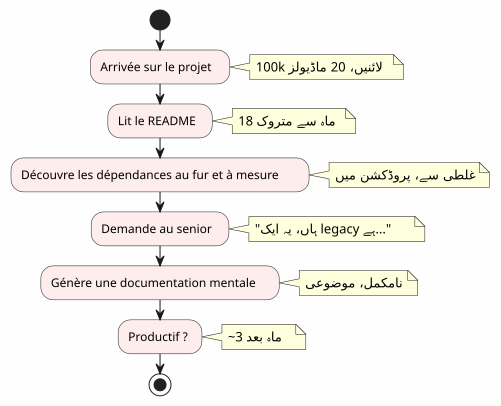
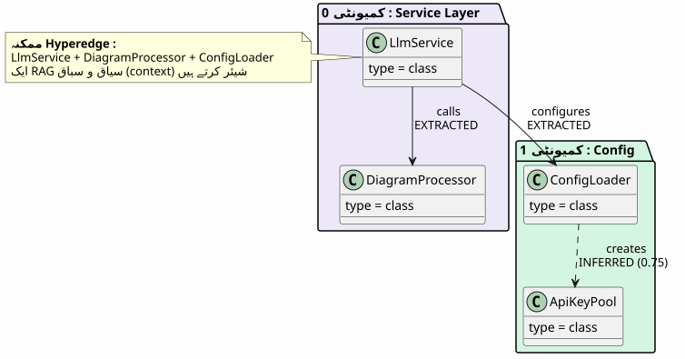
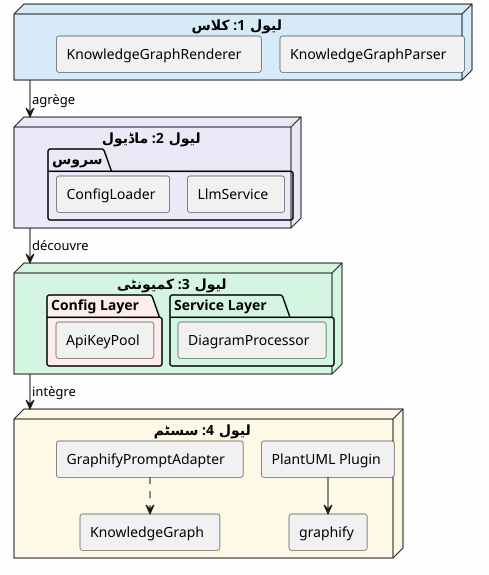
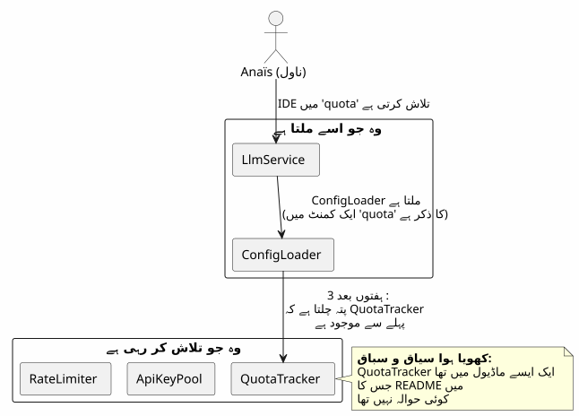
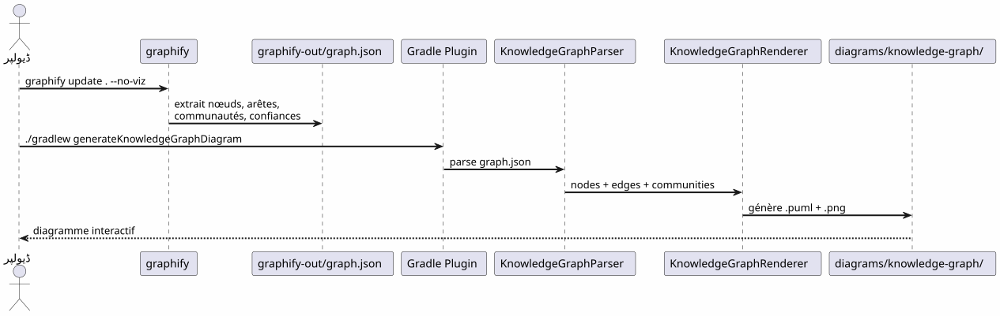
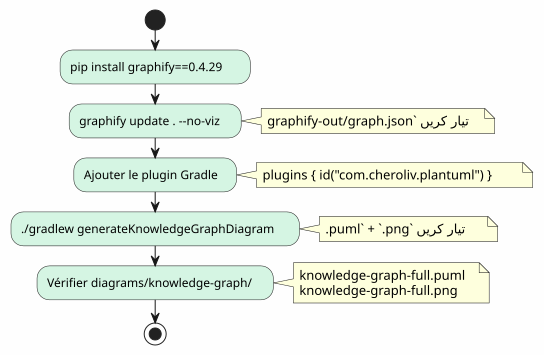
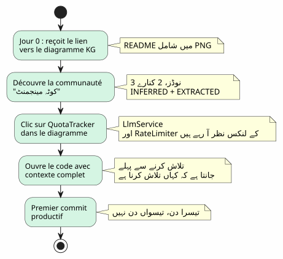
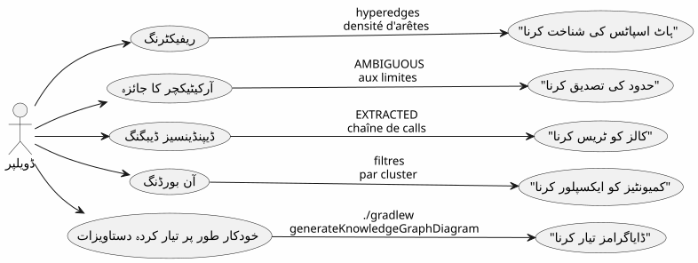

کوڈ بیس کو سمجھنے کے ٹول کے طور پر Knowledge Graph
شائع شدہ: 20 April 2027
آپ 100,000 خطوط کے پروجي پر پہنچتے ہیں. بیس ماڈیولز، سو کلاسیں، ناظروں سے خفیہ انحصارات، بھولے گئے ریفакториنگز کا تاريخ. README 'مائِکرور سروسز' ماعمارے کی وعدہ کرتا ہے، لیکن کوڈ کچھ اور بتا رہا ہے. مفید ہونے کے لیے کتنا وقت لگے گا؟تین ماہ— اگر آپ خوش قسمت ہوں۔ اور اگر کڈ کا تعاونی نقشہ خود بخود تیار ہو جائے، تو یہ تین دنوں میں کم ہو جاۓ؟
- جھٹکا
-
[]
دیوار کی اونبورڈنگ
ہر ڈویلپر اس سین سے گزرا ہے :
-
دین 1: ہم آپ کو README دکھاتے ہیں (آخری اپ ڈیٹ: 18 ماہ پہلے)
-
دین 3 : آپ کا پتہ چلتا ہے کہ ماڈیول`billing`وہ راز سے ماڈیول کو بلاتا ہے`notification`
-
دین ۷: ایک سینیور آپ سے کہتا ہے 'آہاں، یہ کلاس دراصل دو چیزیں کرتی ہے، ہم نے اس کو سפלٹ کرنے کی منصوبہ بندی کی تھی'
-
دن 14: آپ سمجھتے ہیں کہ تمام کاروباری سمجھ میں ہے`utils/LegacyHelper.java`— کسی جگہ ارجع نہیں ہونے والا فائل

مسئلہ Documentation کی کمی نہیں — یہنقشے کی کمی. ایک نقشہ جو واقعی علاقہ دکھاتا ہے، آخری ری ڈیزائن کے تخیلی علاقہ نہیں
Knowledge Graph کیا ہے؟
ایک Knowledge Graph ایک منظم نمائندگی کاجانناآپ کے کوڈ بیس میں مواد :
| کیانتیت | کوڈ میں مثال | گراف میں کردار |
|---|---|---|
گرہ |
کلاس، فنکشن، مفهوم |
گراف کا ورتکس |
رک |
دعو, وراثت, درآمد |
دو نودز کے درمیان رابطہ |
کمیونٹی |
مرتبط کلاسوں کا گروہ |
بصری کلاسٹر |
کینارہ کا نوع |
نِکالا گیا, نتیجہ لیا گیا, مبہم |
رشتے میں اعتماد |
اعتماد کا اسکور |
0.0 à 1.0 |
INFERRED किनारे کی قابل اعتمادی |
ہائپر ایج |
رابطہ 3+ گٹھیاں |
معماری پیچیدگی |

ساده UML ڈائگرام سے فرق کیا ہے؟ایک UML ڈائیگرام وہ دکھاتا ہے جو ڈویلپر نے فیصلہ کیا ہے دکھانے کا۔ ایک Knowledge Graph جو واقعی موجود ہے دکھاتا ہے، جس میں چھپی ہوئی انحصارات اور peda honay wale conceepts شامل ہیں۔
سمجھ کے 4 سطوح
ایک Knowledge Graph سیرت کرنے کی اجازت دیتا ہےچار سکیلیں:

| سطح | سوال | گرینیلٹی | آلہ |
|---|---|---|---|
1 — کلاس |
یہ کلاس کیا کرتی ہے؟ |
کوڈ کی لائن |
مکمل ترقی ماحول، براؤزر |
2 — ماڈیول |
اس ماڈیول کے فائلز کون سے ہیں؟ |
پرونده |
|
3 — کمیونٹی |
کون سی مفاہیم ایک ساتھ کام کرتی ہیں؟ |
رابطہ دار گروہ |
Knowledge Graph |
4 — نظام |
sab kuch kaise munazzam hai? |
عالمی معمارتی |
کامل KG ڈائگرام |
Knowledge Graph کے بغیر، سطح 3 اور 4 ہیںغیر رسائی— یا کم سے کم، شخصی اور قدیم
گم شدہ سیاق: ایک ملموس سیناریو
ایک نیا ڈویلپر، انیس، جو پروجیکٹ پر آئی ہے، کی تخیل کریں۔ اسے LLM کالز کے لیے "quota tracking" فیچر شامل کرنا ہوگا۔

ایک نالیج گراف کے ساتھ، 애니یس دیکھتی5 منٹ( empty )
-
QuotaTracker`منتبط ہے`ApiKeyPool(پارمقتطف) -
RateLimiter`مربوط ہے`QuotaTracker(کنارنتیجہ نکالا, اعتماد 0.82) -
یہ تین گانٹھیں ایک بنتی ہیںمجتمعکوٹا منیجمنٹ
-
ایک ہائپر ایج بھی جوڑتا ہے`LlmService`— انٹری پوائنٹ
پائپ لائن : کارڈ سے کوڈ ایک Command میں
گرافائی + گریڈیل پلاگین پائپ لائن آپ کے کوڈ بیس کو PlantUML ڈائیگرام میںدو کمانڈ:

صفر LLM.تمام چیزیں حتمی ہیں: ایک ہی کوڈ، ایک ہی گراف، ایک ہی ڈائیگرام۔ دوبارہ بنایا جا سکتا ہے، ورژننگ کیا جا سکتا ہے، آفلائن میں دیکھا جا سکتا ہے۔
ایج کے انواع: اعتماد کا بيان

کِناروں کے قسم آن بورڈنگ کے لیے اہم ہیں:
-
نکالا گیا: آپ سکون سے ناوگشٹ کر سکتے ہیں — یہ کوڈ میں ہے
-
مستنتج(0.6-0.8) : شاید صحیح ہے، لیکن ریفакٹرنگ کرنے سے پہلے جانچ کریں
-
نتیجہ نکالا گیا(0.8+) : بہت معتبر — اسے مرجع کے طور پر استعمال کریں
-
مبہم: احتیاط، حساس نقطہ. سینیور سے پوچھیں.
5 منٹ اپنی Knowledge Graph بنانے کے لیے

# 1. Installer graphify
pip install graphify==0.4.29
# 2. Générer le Knowledge Graph
graphify update . --no-viz
# 3. Vérifier le JSON
cat graphify-out/graph.json | jq '.nodes | length'
# → 47 nœuds
# 4. Générer le diagramme
./gradlew generateKnowledgeGraphDiagram
# 5. Filtrer par communauté
./gradlew generateKnowledgeGraphDiagram -Pplantuml.kg.community="service layer"
# 6. Limiter la taille
./gradlew generateKnowledgeGraphDiagram -Pplantuml.kg.maxNodes=20آنی بورڈنگ کی قیمت: انیس کا سناریو تجدید شدہ
Knowledge Graph کے ساتھ، Anas کا سénario بنیادی طور پر بدل جاتا ہے:

Knowledge Graph IDE کی جگہ نہیں leta— یہ اسے مکمل کرتا ہے۔ IDE کہاں دکھاتا ہے؛ KG کیوں چڑھتا ہے اور کیسے یہ منظم ہوتا ہے
روزمرہ رہنمائی کے لیے قدر
آن بورڈنگ صرف ایک استعمال کی حالت نہیں ہے۔ ایک سینیئر ڈویلپر کے لیے، نالیج گراف استعمال ہوتا ہے:

| استعمال کی حالت | KG کیسے مدد کرتا ہے | مثال واقعی |
|---|---|---|
ریفاکٹرینگ |
ڈکھائیں ہائپرایڈجز (3+ لنکس) |
یہ 5 کلاسیں ہمیشہ ربط پائی ہوئی ہیں — ایک ماڈیول نکالیں |
معمارے کا جائزہ |
امبیگوز کو حدود پر تلاش کریں |
کال billing اور notification کے درمیان غیر یقینی ہے |
ڈیبگ |
EXTRACTED زنجیر کی پٹری بنائیں |
LlmService LegacyHelper کو کیون بلاتا ہے؟ |
اوين بورڈنگ |
فیلٹر کے ذریعے کمیونیٹس کو ایکسپلور کریں |
‘service layer’ کیا ہے ؟ |
دستاویزات |
سی آئی میں ڈائگرامز بنائیں |
README ہمیشہ بروز |
حدود اور مستقبل
ایک Knowledge Graph جادو کی بٹنی نہیں ہے:
| حد | وضاحت | بایپس |
|---|---|---|
صرف اسٹیٹک کوڈ |
چلنے کا وقت نہیں، ڈیٹا کا بہاؤ نہیں |
ای پی ایم ٹریسز کے ساتھ مکمل کریں |
INFERRED غلط ہو سکتا ہے |
نتائج نکالے گئے kinare ki تصدیق کی ضرورت ہے |
اعتماد کا اسکور + انسانی جائزہ |
کسی بھی کاروباری سمانٹکس نہیں |
KG جانتا ہے "LlmService ConfigLoader کو بلاتا ہے"، نہیں "یہ auth کا ورودی نقطہ ہے |
دستی نوٹس یا LLM پس-پروسسنگ |
زمانیّت نہیں |
کود کا اسنیپش، اس کی ترقی نہیں |
باقاعدگی سے پیدا کرنا + ورژنوں کا موازنہ کرنا |
امکانات:
-
فرق KGدو ورژنوں کا موازنہ کریں تاکہ کمیونٹیوں کی حرکات دیکھے جا سکیں
-
KG تعاونی: نود پر کلک → مطابق لائن پر آئی ڈی ای کھولنا
-
KG تاریخیوقت کے ساتھ قومیتیں کی ترقی کو دیکھیں (تقنی قرض جو منتقل ہوتا ہے)
نتیجہ
Knowledge Graph ایک عمل کو تبدیل کرتا ہےاکيلا اور لمبا(کُوڈ بیس سمجھنا) ایک عملمشترکہ اور تíz(نقشہ دیکھیں).
یہ دستاویز نہیں ہے — یہ … کا ہےنقشہ سازی. ایک نقشہ jo خودکار طور پر اپ ڈیٹ ہوتا ہے، جو حقیقی علاقہ دکھاتا ہے، اور ہر ڈیویلپر، نئی یا سینیئر، کے لیے یقینی طور پر راستے پر چلتا ہے۔
pip install graphify==0.4.29
graphify update . --no-viz
./gradlew generateKnowledgeGraphDiagram3 کمانڈ. 5 منٹ. آپ کے codebase کا نقشہ.